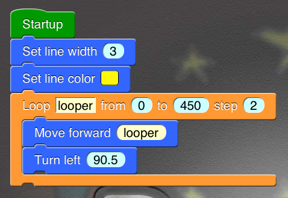

Dynamic ART Lite

Dynamic ART Lite is a graphical programming environment on iPad. It's easy to create
amazing artwork and animations with Dynamic ART Lite.
If you buy the full version on App Store, you will be able to analyze interactions and write
music. You can also share your creations with your friends with the full version.
You don't need to study complex syntax of computer languages. You just drag and drop a set of blocks and
connect them together. It will be a fun way to build your own programs.
It can be used for beginners to learn and practice mathematical, computational ideas and creative thinking.
- Graphical programming by dragging and dropping.
- Program executing flow control.
- Arithmetic operations, simple math functions (abs, sqrt, sin, cos, tan, asin, acos, atan, ln, log, round, floor, ceil, etc.).
- Turtle drawing similar to Logo Language.
- Basic 2-D sketching (points, lines, rectangles and ellipses).
- RGBA and HSBA color palette.
- More detailed images on Retina iPad (2048*1536).
The following features are not included in Dynamic ART Lite. If you are interested, please buy Dynamic ART on app store.
- Multi-programs management.
- Sub-block-sequence reuse.
- List operations.
- Advanced 2-D sketching (polygons, arcs and Bezier curves).
- Detect the beginning, movement and ending of user touch.
- Play sound and music.
You can try some examples first. Please click button "Open in Dynamic ART Lite" to import the first example.